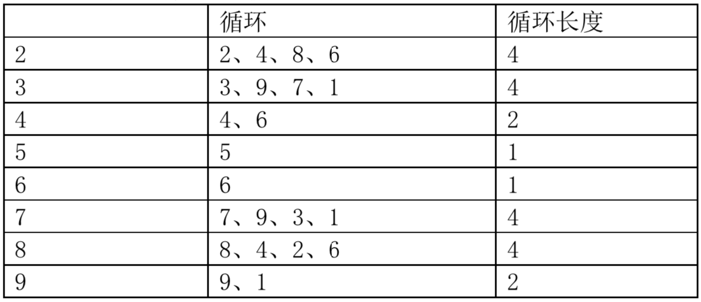

乐乐是一个聪明而又勤奋好学的孩子。他总喜欢探求事物的规律。一天，他突然对数的正整数次幂产生了兴趣。
众所周知，$2$ 的正整数次幂最后一位数总是不断的在重复 $2，4，8，6，2，4，8，6$......我们说 $2$ 的正整数次幂最后一位的循环长度是 $4$（实际上 $4$ 的倍数都可以说是循环长度，但我们只考虑最小的循环长度）。类似的，其余的数字的正整数次幂最后一位数也有类似的循环现象：

这时乐乐的问题就出来了:是不是只有最后一位才有这样的循环呢？对于一个整数 $n$ 的正整数次幂来说，它的后 $k$位是否会发生循环？如果循环的话，循环长度是多少呢？
注意：
- 如果 $n$的某个正整数次幂的位数不足 $k$，那么不足的高位看做是 $0$。
- 如果循环长度是 $L$，那么说明对于任意的正整数 $a$，$n$ 的 $a$ 次幂和 $a+L$ 次幂的最后 $k$ 位都相同。
 Comet OJ
Comet OJ